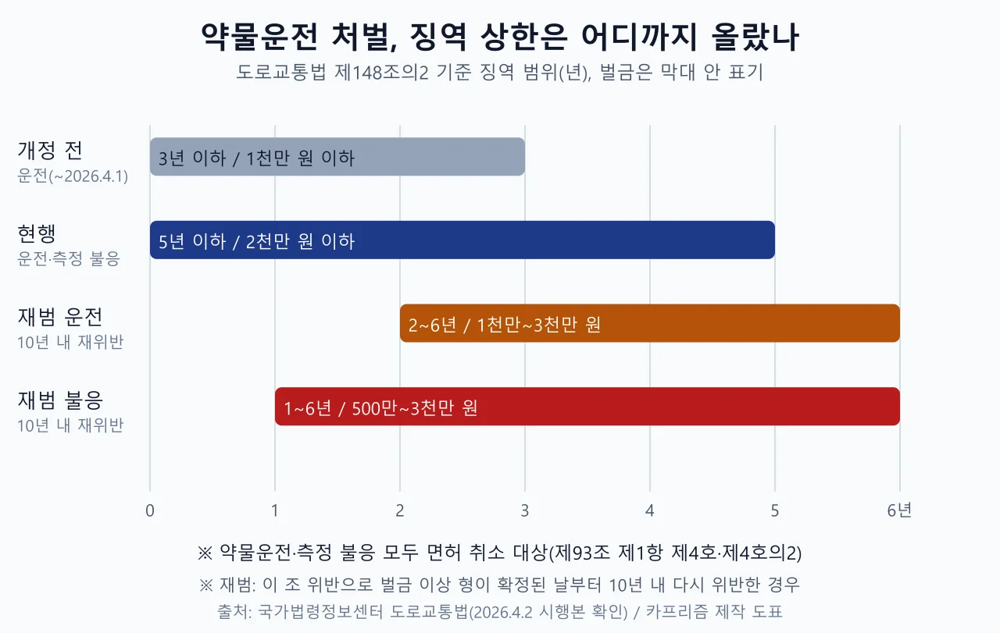
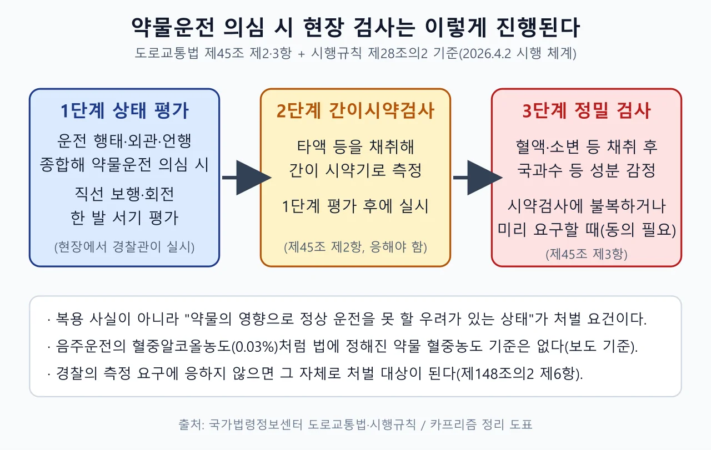
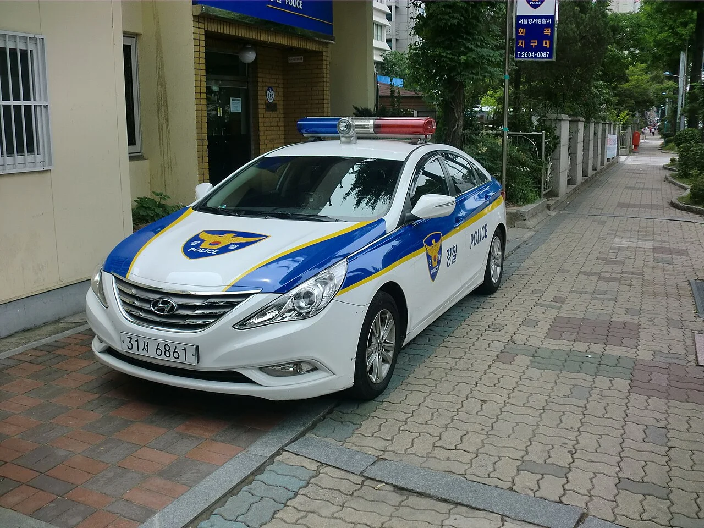
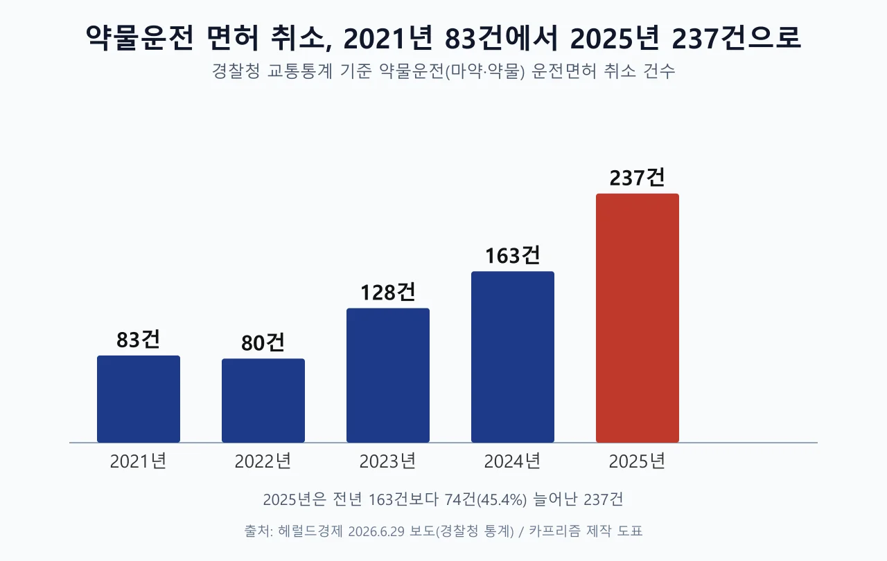
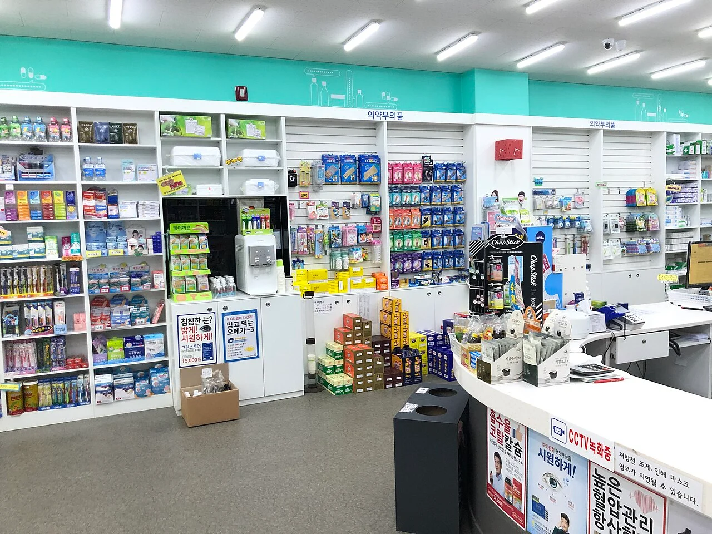
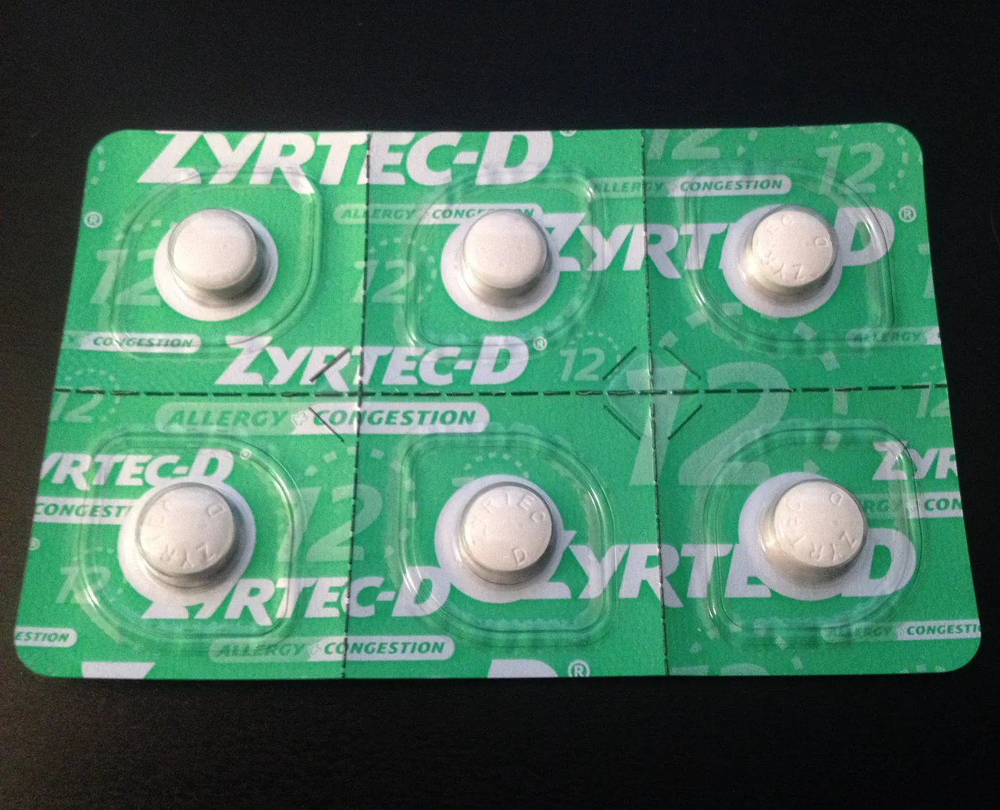
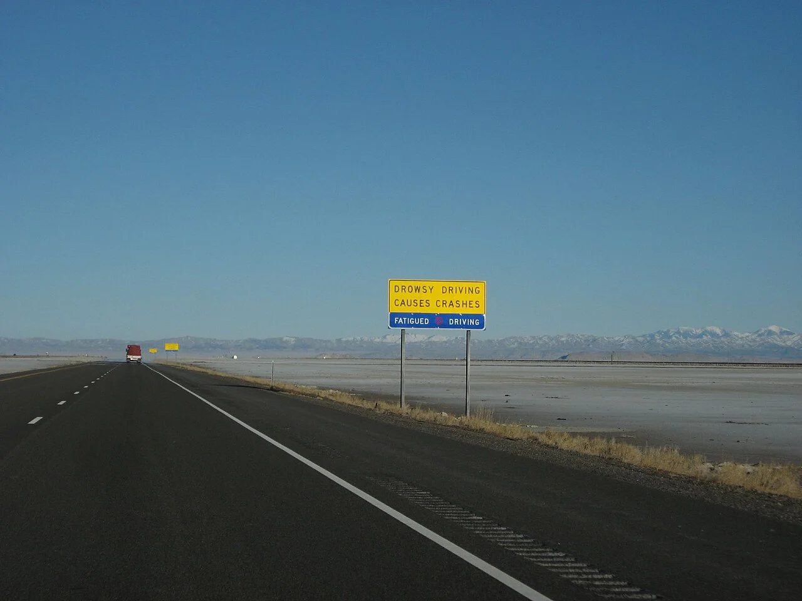

▲ 감기약 시럽과 알약 — 약 종류에 따라 졸음·집중력 저하가 생길 수 있어 복용 후 운전은 약사 확인이 먼저다 ⓒ Wikimedia Commons / NIAID (CC BY 2.0)
"감기약 한 알 먹었는데 운전해도 되나요?" 가을·겨울 감기철이면 약국에서 가장 자주 나오는 질문이다. 2026년 4월 2일부터 약물운전 처벌이 5년 이하 징역 또는 2천만 원 이하 벌금으로 무거워졌고, 경찰이 현장에서 약물 복용 여부를 측정할 수 있는 근거도 생겼다. 이후 "감기약도 단속 대상"이라는 말이 퍼졌지만, 보도와 법조문을 맞춰 보면 이 말은 절반만 맞다. 이 글은 국가법령정보센터의 도로교통법 조문·시행규칙으로 시행일과 처벌 구간을 직접 확인하고, 감기약은 어디까지가 처벌 대상이고 어디부터가 '조심해야 할 영역'인지를 나눠 정리했다.
1. 4월 2일에 바뀐 것 — 조문으로 확인한 시행일과 처벌 구간
시행일은 보도마다 하루 차이가 나지만, 법률 부칙은 2026년 4월 2일이다. 헤럴드경제 3월 30일자 기사는 '4월 1일'로 적었지만, 국가법령정보센터의 법률 제20864호(2025년 4월 1일 공포) 부칙 제1조는 "공포 후 1년이 경과한 날부터 시행"이라고 규정하고 이 법의 일부 조항(제45조 제1항 개정분)은 별도로 "2026년 4월 2일부터 시행"한다고 못 박았다. 이후 2025년 12월 30일 개정(법률 제21246호)을 거치며 '약물'의 정의는 제2조 제35호에 마약류와 환각물질로 규정돼 있다. 이 글의 조문은 2026년 10월 현재 현행 도로교통법 기준이며, 도로교통법·시행규칙·마약류관리법 시행령·화학물질관리법 시행령은 국가법령정보센터 Open API로 받은 원문(XML)으로 직접 확인했다. 케이스노트 판본은 보조 대조용이다.
| 조문 | 내용 | 달라진 점 |
|---|---|---|
| 제2조 제35호 | '약물'이란 마약류관리법의 마약·향정신성의약품·대마, 화학물질관리법의 환각물질 | 제35호 본문에는 2011.6.8 전문개정 표기가 그대로 남아 있다(원문 확인). 이번 개정 표기(2025.12.30)는 제45조 제1항에 붙어 있다 |
| 제45조 제1항 | 과로·질병·약물의 영향과 그 밖의 사유로 정상 운전을 못 할 우려가 있는 상태에서 운전 금지 | 금지 원칙은 유지. 제1항 문구에 2025.12.30 개정 표기가 있다 |
| 제45조 제2·3항 | 경찰이 타액 간이시약검사 등으로 약물 복용 여부를 측정, 불복하면 동의를 받아 혈액 등으로 재측정 | 신설. 운전자는 측정에 응해야 한다 |
| 제148조의2 제5항 | "제45조제1항을 위반하여 약물의 영향으로 인하여 정상적으로 운전하지 못할 우려가 있는 상태에서" 운전한 사람은 5년 이하 징역 또는 2천만 원 이하 벌금 | 종전 3년 이하·1천만 원 이하에서 상향. 처벌 요건이 '약물의 영향'으로 한정 |
| 제148조의2 제6항 | 약물의 영향으로 정상 운전을 못 할 우려가 있다고 인정할 만한 상당한 이유가 있는 사람이 경찰의 측정에 응하지 않으면 5년 이하 징역 또는 2천만 원 이하 벌금 | 신설. '상당한 이유'가 있는 경우로 한정 |
| 제148조의2 제4항 | 제45조 제1항(약물 운전) 또는 제2항(측정 요구) 위반으로 벌금 이상 확정 후 10년 내 재위반: 운전 2~6년 징역·1천만~3천만 원, 불응 1~6년 징역·500만~3천만 원 | 신설(재범 가중) |
| 제154조 제3호 | 제45조 제1항을 위반해 '과로·질병'으로 정상 운전을 못 할 우려가 있는 상태에서 운전한 사람: 30만 원 이하 벌금 또는 구류 | 약물이 아닌 사유의 별도 벌칙(원문 확인). 약물 때문이면 제148조의2 제5항이 적용된다 |
| 제93조 제1항 제4·4의2호 | 약물 영향 운전(제4호), 측정 불응(제4의2호)은 필요적 취소 사유(단서에 열거) | 불응 조항 신설 |

▲ 개정 전 3년 이하에서 현행 5년 이하로, 재범이면 최대 6년까지 올라간다 ⓒ 카프리즘 제작 도표 (국가법령정보센터 도로교통법 제148조의2 기준)
머니투데이는 4월 2일자 기사에서 "5년 이하 징역 또는 2천만 원 이하 벌금"이라고 전했고, 헤럴드경제는 재범자의 경우 2~6년 징역·1천만~3천만 원이라고 소개했다. 조문과 대조하면 두 수치 모두 맞다. 다만 재범 구간은 '운전'에 한정한 수치이고, 측정 불응 재범은 1~6년 징역·500만~3천만 원으로 따로 정해져 있다. 헤럴드경제가 인용한 재범 수치만 보고 불응 재범까지 같다고 이해하면 틀린다.
조문 원문은 국가법령정보센터에서 직접 볼 수 있다. 도로교통법 바로가기
2. 490종과 542품목 — '약물'은 어디까지이고 감기약은 어디에 있나
형사처벌의 대상이 되는 '약물'은 법에 정의돼 있고, 일반 감기약의 주성분인 항히스타민제는 그 정의에 들어 있지 않다. 도로교통법 제2조 제35호는 약물을 마약류관리법상 마약·향정신성의약품·대마, 그리고 화학물질관리법상 환각물질로 한정한다. 머니투데이와 헤럴드경제는 이를 합쳐 '490종'(마약류 481종, 환각물질 9종)이라고 보도했고, 헤럴드경제는 "감기약·항히스타민제는 직접 대상이 아니지만 일부 1세대 항히스타민제는 운전 능력을 떨어뜨릴 수 있다"는 점도 함께 짚었다. 법조문에 '490'이라는 숫자는 없고, 이 합계는 보도 기준임을 밝혀 둔다. 이 정의는 처벌 조항에도 그대로 이어진다. 제148조의2 제5항은 "제45조제1항을 위반하여 약물의 영향으로 인하여 정상적으로 운전하지 못할 우려가 있는 상태에서" 운전한 사람을 처벌 대상으로 적는다. 그래서 변호사 해설(로톡)도 "일반 감기약이나 항히스타민제는 졸음을 유발해도 마약·향정신성의약품에 해당하지 않으면 제45조 위반(약물운전)이 되지 않는다"고 정리하고, 헤럴드경제는 경찰 관계자의 말을 빌려 "어떤 약인지보다 정상 운전이 가능한 상태인지가 중요하다"고 전했다.
같은 약물도 세는 단위에 따라 숫자가 달라진다. 데일리팜은 4월 6일 기사에서 단속 대상이 되는 마약·향정 의약품을 542품목(마약 209품목, 향정 333품목)이라고 전했다. 490은 '물질 종류', 542는 '시판 품목 수'라서 단위가 다르다. 여기에 약사회가 자체 분류한 386개 성분(이 중 '운전금지' 98개)이 따로 있는데, 약사회도 "정부의 공식 기준이 아니다"라고 밝혔다. 법의 약물 범위, 식약처가 공개한 운전금지약 목록, 약사회 자체 분류는 서로 다른 목록이다. 약사회의 386개 성분은 2월 3일 공개됐고 "정부 공식 기준이 마련되기 전까지의 임시 안내"라는 설명이 붙었다(데일리팜). 법령 원문으로 대조한 결과는 다음과 같다. 환각물질 9종은 화학물질관리법 시행령 제11조가 열거한 톨루엔·초산에틸·메틸알코올(3), 이를 함유한 시너·접착제·풍선류·도료(4), 부탄가스(1), 의료용 제외 아산화질소(1)를 낱개로 세면 정확히 9가지라 보도와 맞는다. 마약·향정신성의약품은 마약류관리법 시행령 별표 1~6의 품명 행을 직접 세면 약 485행이 나와 보도의 481종과 근접하지만(카프리즘 자체 집계), 정확히 일치하는지는 확인하지 못했다. 대마는 별표가 아닌 법 제2조 제4호의 정의로 규정돼 있다.
| 약 종류 | 예시 | 제148조의2 제5항 처벌 대상 |
|---|---|---|
| 마약·향정신성의약품 | 항불안제, 불면증 치료제, ADHD 치료제, 비만 치료제(데일리팜 보도) | 대상(약의 영향으로 정상 운전을 못 할 우려가 있는 상태일 때) |
| 환각물질 | 부탄·톨루엔 등 흡입 물질(헤럴드경제 보도) | 대상 |
| 항히스타민제·종합감기약 | 콧물·알레르기약, 졸음이 오는 일부 감기약 | 정의에 없어 제5항 처벌 대상이 아니다(경찰·약사회·데일리팜 공통). 단 졸음·집중력 저하 시 운전해서는 안 된다는 원칙은 그대로 |
| 코데인 등 마약류 성분 기침약 | 일부 처방 기침약(코데인·디히드로코데인 함유) | 마약류관리법 시행규칙 제2조의 '한외마약' 기준(100g당 코데인 1g 이하, 1회 20mg 이하, 다른 유효성분 3종 이상 배합 등)에 맞는 복합제는 마약 정의에서 제외되므로 도로교통법상 '약물'에도 들지 않는 것으로 읽힌다(조문 해석, 판례 미확인). 이 기준을 넘는 고용량·단일제 처방약은 마약이다. 간이검사에서 모르핀 양성이 나올 수 있다는 보도가 있고, 처방받았다고 면책되는 것은 아니라는 설명도 있다 |
| 기타 처방약 | 당뇨·고혈압·치매 치료제 등 운전 능력을 떨어뜨릴 수 있다고 보도된 약(머니투데이) | 정의 밖이면 이 조항 대상은 아님. 성분별 확인 필요 |
📍 '처벌 대상이 아니다'가 곧 '운전해도 된다'는 뜻은 아니다
도로교통법 제45조 제1항의 운전 금지는 "과로, 질병 또는 약물의 영향과 그 밖의 사유로 정상적으로 운전하지 못할 우려가 있는 상태"로 넓다. 반면 제148조의2 제5항의 징역·벌금은 그중 '약물의 영향'으로 운전한 경우만 적는다. 정리하면 감기약·항히스타민제로 졸린 상태에서 운전해도 약물운전(제5항)으로 처벌되는 것은 아니다. 하지만 졸음·집중력 저하 상태의 운전 자체는 금지 취지에 어긋나고, 사고가 나면 졸음운전·안전운전의무 위반에 따른 형사·민사 책임이 별개로 따라온다. 데일리팜도 항히스타민제는 처벌 대상이 아니지만 졸음으로 인한 운전 금지 규정은 적용된다고 정리했다.
제45조 제1항의 '과로·질병' 위반에는 제154조 제3호가 별도로 "30만 원 이하의 벌금이나 구류"를 정해 두었다(원문 확인). 도로교통법 시행령의 범칙금 별표(별표 8)에서는 자동차 운전자의 제45조 위반 항목을 찾지 못해, 범칙금 통고보다 형사 절차로 처리되는 구조로 보이지만 단정하지는 않는다. 또 제154조 제3호는 '과로·질병'만 적고 있어 감기약 부작용 졸음이 여기에 해당하는지는 조문만으로 판단할 수 없다.
다만 아직 확인하지 못한 부분도 있다. 2026년 4월 시행 후 감기약 복용 운전을 다룬 법원 판결이나 실제 입건 사례는 검색으로 찾지 못했다. 이 부분은 단정하지 않는다.
3. 현장 단속은 3단계 — 보행 평가, 타액 검사, 정밀 검사
음주운전과 달리 약물운전에는 '혈중농도 기준'이 없어서, 경찰은 운전자의 상태를 먼저 본다. 도로교통법 시행규칙 제28조의2(2026.4.1 신설, 국가법령정보센터 원문 확인)는 약물 복용 여부의 측정을 세 가지 방법으로 나눈다. 경찰공무원이 운전 행태·외관·언행·태도 등 객관적 사정을 종합해 약물운전이 의심될 때 직선 보행·회전과 한 발 서기를 평가하고(제1항 제1호), 그 평가 뒤에 타액 등으로 간이시약검사를 한다(제3항 제2호). 운전자가 간이검사 결과에 불복해 혈액 등 검사에 동의하거나 간이검사 전에 미리 혈액 등 검사를 요구하면, 가까운 병원·의원에서 혈액이나 소변을 채취해(채혈 때 비알콜성 소독약 사용) 국립과학수사연구원 등 전문기관에 감정을 맡긴다. 소변은 운전자가 동의하면 경찰관서 등에서 채취할 수도 있다. 이 규칙이 정하지 않은 세부 사항은 경찰청장이 정한다(제4항). 도로교통법 제2조 제26호는 제45조와 제148조의2의 경우 도로 밖(주차장·아파트 단지 등)에서 운전한 것도 '운전'에 포함한다고 정해 두어, 약물운전 규정은 도로 밖에서도 적용된다.
| 단계 | 방법 | 실시 조건(원문) |
|---|---|---|
| 1. 상태 평가 | 직선보행·회전, 한 발 서기 등 운동능력 평가 | 운전 행태·외관·언행 등을 종합해 약물운전이 의심되는 경우 |
| 2. 간이시약검사 | 타액 등을 채취해 간이 시약기로 측정 | 1단계 평가를 한 뒤에 실시 |
| 3. 혈액등검사 | 혈액·소변 채취 후 국과수 등 성분 감정 | 간이검사에 불복하며 동의하거나, 간이검사 전에 운전자가 요구한 경우. 도로교통법 제45조 제3항상 운전자 동의 필요 |

▲ 도로교통법 제45조와 시행규칙 제28조의2에 따른 약물 복용 여부 측정 순서 ⓒ 카프리즘 제작 도표
헤럴드경제 3월 30일자 기사에 따르면 경찰청은 4월 2일부터 5월 31일까지 2개월간 약물운전 특별단속을 벌였다. 클럽·유흥가와 대형병원 인근에서 지그재그 운전 같은 이상 징후가 있는 차량을 집중 점검한다고 알려졌고, 이 기사는 단속 대상 약물이 약 490종이라 확인 절차가 음주운전보다 복잡하다고 짚었다. 6월 29일자 헤럴드경제 기사에 따르면 경찰은 음주운전 차량처럼 약물운전 차량도 압수 대상에 포함하고 동승자에게도 방조죄를 적극 적용하겠다고 밝혔으며, 7월 1일부터 3개월간 음주·약물운전 집중 수사 기간을 운영하겠다고 알렸다. 두 기간의 단속 결과를 경찰청이 발표했는지는 10월 현재 검색으로 찾지 못했다. 다만 8월 17일 세계일보 보도는 경찰이 국과수와 졸피뎀 등 대표 약물의 단속 기준을 논의하기 시작했고, 현재는 음주 단속 중 의심 운전자를 내리게 해 직선 보행·회전을 시켜 보거나 사고 때 측정하는 방식이라고 전했다. 그만큼 현장 기준이 아직 모호하다는 지적이 따른다.

▲ 서울 강서경찰서 순찰차(단속 현장 사진이 아닌 자료 사진) — 측정 요구에 응하지 않으면 그 자체로 5년 이하 징역·2천만 원 이하 벌금 대상이다 ⓒ Wikimedia Commons / hyolee2 (CC BY-SA 3.0)
제도가 강화된 배경에는 증가세가 있다. 헤럴드경제 1월 13일자 기사는 경찰 집계로 2025년 약물운전 면허 취소가 237건으로 전년 163건보다 74건(45.4%) 늘었다고 전했다. 같은 매체 6월 29일자 기사는 경찰청 교통통계를 인용해 2021년 83건, 2022년 80건, 2023년 128건, 2024년 163건, 2025년 237건이라고 연도별로 적었다. 3월 26일자 기사는 2024년을 164건으로 소개했지만 두 기사가 163건으로 일치하므로 이 글은 163건으로 정리한다(경찰청 원자료는 직접 확인하지 못했다). 올해 수치도 나왔다. 8월 17일 이데일리와 세계일보는 조국혁신당 정춘생 의원실이 경찰청에서 받은 자료를 인용해, 2026년 1~7월 약물운전 면허 취소가 287건으로 이미 지난해 연간(237건)을 넘었다고 전했다(2021년 83건에서 2025년 237건은 185.5% 증가). 같은 자료에서 약물운전 교통사고는 2023년 24건, 2024년 70건, 2025년 153건으로 늘었고, 마약류를 제외한 의약품 복용 사고가 2023년 19건, 2024년 52건, 2025년 120건(4명 사망·214명 부상)으로 대다수였다. 3월 26일자 헤럴드경제는 약물 관련 사고를 2019년 2건에서 2024년 23건이라고 전했지만, 경찰 자료의 2024년 70건과 달라 집계 기준이 다른 것으로 보여 이 글은 최신 경찰 자료를 따른다. 국과수가 2023~2025년 약물운전 관련 감정 의뢰 1,046건을 분석했더니 졸피뎀 370건, 알프라졸람 144건, 플루니트라제팜 126건 순이었다는 내용도 같은 보도에 있다.

▲ 약물운전 면허 취소는 2021년 83건에서 2025년 237건으로 늘었다(2026년은 1~7월 287건, 본문 참고) ⓒ 카프리즘 제작 도표 (헤럴드경제 2026.6.29 보도, 경찰청 통계 기준)
4. 약 봉투와 포장에서 확인할 문구 — 약사회가 4월 2일 정한 표기
약국에서 받은 약 봉투에 '운전 위험'이나 '졸음 유발·운전 주의' 문구가 있으면 그날은 운전대를 잡지 않는 것이 원칙이다. 이 표기는 법이 정한 의무 문구가 아니라 약사회가 만든 자체 기준이다. 데일리팜 보도에 따르면 대한약사회는 개정법이 시행된 4월 2일 약국의 복약안내문·약 봉투 표기 기준을 마련했다. 청구 프로그램 업체에 요청해 약 이름 옆에 '운전 위험', 복약안내문이나 약 봉투에 '정상적인 운전이 불가시 운전 금지' 같은 문구가 나오게 했고, 약사회는 항히스타민제처럼 졸음·어지러움이 생길 수 있는 약도 운전 경고를 달아야 한다는 입장을 밝혔다. 약사회는 식약처에 공식 지침 마련을 요청 중이라고 했고, 한편으로는 '운전 금지'를 일률적으로 적으면 환자가 필요한 약을 먹지 않을 수 있다는 우려도 밝혔다. 헤럴드경제 1월 13일자 기사도 처방전에 '졸음 유발', '운전 금지' 또는 '운전 주의' 표기가 있으면 운전대를 잡지 말라고 안내했다. 약사회는 새 약을 먹기 시작할 때 최소 1~2회 복용 후 졸림이나 어지러움이 없는지 확인하라고도 권했다(데일리팜).

▲ 국내 약국 내부(2020년 3월 촬영 자료 사진) — 일반약은 진열대에서 직접 고르기 쉬우니 구매 전 '졸음' 표기를 확인하고 약사에게 운전 여부를 알려야 한다 ⓒ Wikimedia Commons / 최광모(Choi Kwang-mo) (CC0)

▲ 항히스타민 성분이 든 알레르기약 포장(미국 시판 제품 예시, 국내 제품 아님) — 졸음 여부는 성분과 개인에 따라 달라 약사에게 확인해야 한다 ⓒ Wikimedia Commons / Garzfoth (CC BY-SA 4.0)
✅ 운전 전 약 확인 순서 (약사회 안내·보도 종합)
· 약 봉투·복약안내문: '운전 위험', '운전주의', '졸음주의' 문구가 있는지 먼저 본다
· 일반약 포장: 사용상 주의사항의 '졸음', '운전 또는 기계 조작' 표기를 확인한다. 약사회는 식약처에 일반의약품 외부 포장에 경고 문구를 명확히 넣도록 건의했다
· 성분 중복: 종합감기약에도 항히스타민 성분이 들어 있을 수 있어 평소 먹던 약도 다시 본다(식약처 안내를 인용한 보도)
· 약사에게 한마디: "오늘이나 내일 운전해야 해요"라고 먼저 알린다. 약사 칼럼은 이 한 문장이 졸음이 적은 성분을 고르는 출발점이라고 제안했다
· 졸음·어지러움이 있으면: 약 종류와 상관없이 운전하지 않는다(약사회 입장)
5. "졸리지 않으니 괜찮겠지"가 위험한 이유
졸음을 못 느낀다고 해서 반응속도와 판단력이 멀쩡하다는 뜻은 아니다. 데일리팜에 실린 약사 칼럼은 일부 항히스타민제가 졸리지 않아도 인지 기능·반응 시간·판단력에 영향을 줄 수 있다고 지적했다. 이 칼럼은 성분별 차이의 예로 세티리진이 뇌의 H1 수용체를 약 26% 점유하는 데 비해 펙소페나딘은 0%에 가깝다는 연구를 소개했다. 개인 칼럼의 인용이라 일반화에는 한계가 있고, 성분을 바꾸는 판단은 약사·의사와 상의해야 한다.

▲ 'DROWSY DRIVING CAUSES CRASHES(졸음운전은 사고를 부른다)' 표지가 서 있는 미국 고속도로(촬영지 미확인) — 약 기운이 남은 상태의 장거리 운전은 졸음 사고로 이어지기 쉽다 ⓒ Wikimedia Commons / Ken Lund (CC BY-SA 2.0)
복용 중인 약이 겹칠 때도 위험하다. 시대일보 9월 22일자 기사는 여러 약을 함께 먹으면 항히스타민 성분이 중복될 수 있고, 음주 후 약을 먹으면 중추신경계 영향으로 졸음이 더 심해질 수 있다고 전했다. 감기약과 멀미약을 같은 날 먹는 경우도 마찬가지다. 같은 기사는 아주대 약학대학 교수의 조언을 인용해 "운전을 해야 한다면 약사 등 전문가와 상의해 졸음이 적은 성분을 선택하는 것이 좋다"고 정리했다.
📍 간이검사 '양성'과 '위법'은 다르다
서울 종각역 인근 다중 추돌사고(2026년 1월 2일 오후 6시경, 1명 사망·여러 명 부상, 부상자 수는 보도마다 9~14명으로 다르다)의 택시기사는 체포 과정의 간이검사에서 모르핀 양성이 나왔다. 하지만 국립과학수사연구원은 혈액·소변 정밀 분석에서 마약류관리법상 금지된 약물 성분이 검출되지 않았다고 서울경찰청에 통보했고(위키트리), 경찰은 약물운전 혐의 없이 교통사고처리특례법상 치사상 혐의로 2월 11일 불구속 송치했다(한국경제 2월 25일자). 법원은 앞서 구속영장을 기각했다. 헤럴드경제 1월 4일자 기사는 이 사건의 쟁점이 "감기약에 든 미량의 모르핀 성분을 형사상 약물 사용으로 볼 수 있느냐"이고, 한 법률가는 "핵심은 그 상황에서 정상 운전이 가능했느냐"라고 짚었다고 전했다. 일부 보도는 코데인·디히드로코데인 성분이 몸속에서 모르핀으로 대사돼 간이검사에서 양성이 나올 수 있다고 설명했다. 간이검사 결과만으로 단정할 수 없어 혈액 등 정밀 검사 절차가 따로 있다는 점을 보여 주는 사례이지, 감기약을 먹고 운전해도 된다는 근거는 아니다. 반대 방향의 사례도 있다. 세계일보 8월 17일자 기사에 따르면 8월 7일 서울 강북구에서 주차된 오토바이와 담벼락을 들이받고 도주한 70대 남성은 마약 간이검사에서 졸피뎀 등 6종의 성분이 검출됐고, 피부과에서 처방받은 약을 먹었다고 주장해 경찰이 국과수 정밀 감정 결과를 보고 혐의를 적용하기로 했다.
6. 가을·겨울 감기철 실전 팁
감기약을 먹어야 하는 날과 운전해야 하는 날이 겹친다면, 약을 고르기 전에 운전 일정부터 알려야 한다. 아래는 약사회 안내와 약사 칼럼, 법조문에서 확인한 내용을 상황별로 묶은 것이다. 복용 후 몇 시간 뒤부터 운전해도 되는지는 약마다 달라 일률적인 시간은 제시하지 않는다.
| 상황 | 권장 행동 | 근거 |
|---|---|---|
| 병원 처방약을 받았다 | 약 봉투의 운전 관련 문구 확인, 불분명하면 약사에게 운전 가능 여부 문의 | 약사회 표기 기준(4.2) |
| 약국에서 감기약을 산다 | "운전합니다"라고 먼저 말하고 졸음이 적은 성분 상담 | 약사 칼럼·시대일보 보도 |
| 약을 처음 먹는 날 | 운전이 필요 없는 시간대에 먼저 복용해 졸림·어지러움이 없는지 최소 1~2회 확인한다 | 약사회 권고(데일리팜) |
| 수면제·신경안정제·ADHD약을 처방받았다 | 처방약이어도 '운전 위험' 표기가 있으면 복용 후 운전하지 않는다. 처방 여부는 면책 사유가 아니라는 변호사 설명이 있다 | 로톡 해설·데일리팜 542품목 보도 |
| 약 성분에 코데인·디히드로코데인이 있다 | 약사에게 "운전합니다, 이 약이 한외마약 기준에 해당하나요"라고 묻고 졸음 여부를 함께 확인한다. 간이검사에서 모르핀 양성이 나올 수 있다는 보도가 있으니 처방전·약 봉투를 보관한다 | 마약류관리법 시행규칙 제2조, 보도(조문 해석) |
| 단속 중 측정 요구를 받았다 | 측정에 응한다. 불응하면 그 자체로 5년 이하 징역·2천만 원 이하 벌금 대상이 될 수 있고, 결과에 불복하면 동의를 받아 혈액 등으로 재측정할 수 있다 | 도로교통법 제45조 제2·3항, 제148조의2 제6항 |
| 감기약·멀미약·술이 겹친다 | 복용 성분 중복 확인, 음주 후 복용 금지 | 시대일보 9.22 보도 |
| 졸음·어지러움이 느껴진다 | 운전 중단, 휴게소·졸음쉼터에서 쉬거나 대중교통·대리운전 이용 | 약사회 입장, 도로교통법 제45조 |
졸음이 올 때 대처법은 카프리즘이 앞서 다룬 졸음운전 예방 가이드와 커피냅 체크리스트에 정리해 두었다. 약 기운에 의한 졸음은 카페인으로 해결되지 않을 수 있으니, 약을 먹은 날의 장거리 운전은 처음부터 계획에 넣지 않는 것이 안전하다.
7. 요약
약물운전 처벌 강화는 2026년 4월 2일에 시행됐고, 처벌은 5년 이하 징역·2천만 원 이하 벌금(재범 2~6년, 측정 불응 5년 이하)이다. 처벌 대상 '약물'은 마약류·환각물질로 법에 정의돼 있고 제148조의2 제5항도 '약물의 영향'으로 운전한 경우로 한정돼 있어, 일반 항히스타민제·종합감기약은 처벌 대상이 아니다. 다만 고용량·단일 성분 코데인 같은 마약류 처방약은 달라질 수 있고(소량 복합 기침약은 한외마약이라 마약 정의에서 빠진다는 것이 조문 해석), 졸음·집중력 저하로 정상 운전이 어려우면 약 종류와 상관없이 운전해서는 안 된다. 과로·질병 때문이면 제154조 제3호(30만 원 이하 벌금·구류)가 따로 있다.
실전 원칙은 세 가지다. 약 봉투·포장의 운전 관련 문구를 확인하고, 약사에게 "운전한다"고 먼저 알리고, 졸음이 오면 운전을 멈춘다. 490종·542품목은 단위가 다르다(물질 종류 대 시판 품목). 법령 원문으로 환각물질 9종은 맞아떨어졌고 마약·향정은 약 485행으로 보도의 481종과 근접했지만 정확한 일치는 확인하지 못했다. 시행 후 감기약 운전을 다룬 판결이나 경찰청의 특별단속 결과 발표도 찾지 못했다.